linkedin.com/in/niccolo-fantini
MSc Mechanical Engineering student with hands-on expertise in CAD modeling, FEM analysis, and composite manufacturing. Proven leadership record, having directed a 20-member team to win the 2024 SuMoth international competition. Strong background in structural validation, data analysis applied to structural monitoring, and Machine Learning.
- Selected for an intensive engineering week applying professional Dewesoft DAQ hardware and software to real measurement and testing challenges.
- Collaborated with an international team on instrumentation and data analysis.
- Directed a 20-member department to secure 1st place overall in the SuMoth international competition, coordinating workflows and ensuring timely component delivery.
- Conducted advanced CAD design and FEM analysis, alongside hands-on manufacturing of composite components (carbon fiber, glass, basalt) via VARTM and manual lay-up.
- Oversaw the boat’s production and final assembly, enforcing strict quality control and sustainability metrics.
During progressive speed-profiling trials of the ALTEA prototype, anomalous vibratory behaviour was detected on the hydrofoil profiles, with unknown physical origin and excitation mechanisms. The goal: quantitatively characterize the phenomenon across the full operational speed range (up to 19 knots) to diagnose the root cause and inform design improvements for future foil generations.
- Test protocol design: executed a dual-phase experimental diagnostic approach, correlating laboratory Experimental Modal Analysis (EMA) with operational on-water measurements.
- Harsh-environment DAQ & sensors: configured rugged DAQ systems (Dewesoft SIRIUS and IOLITE) and managed dynamic strain acquisitions via waterproof Wheatstone half-bridge strain gauges synchronized with a GPS unit.
- Advanced signal processing: implemented a custom “Cubic Spline Detrending” procedure to isolate the high-frequency vibratory response from massive quasi-static hydrodynamic loads without phase distortion.
- Data correlation & higher-order analysis: processed raw data with STFT to generate velocity-frequency spectrograms, applying cross-velocity peak tracking and bicoherence analysis to confirm non-linear structural processes.
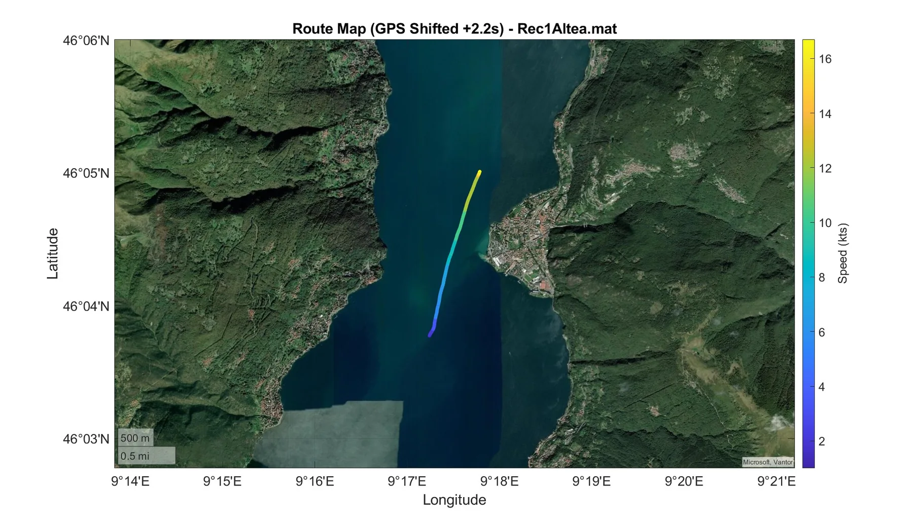
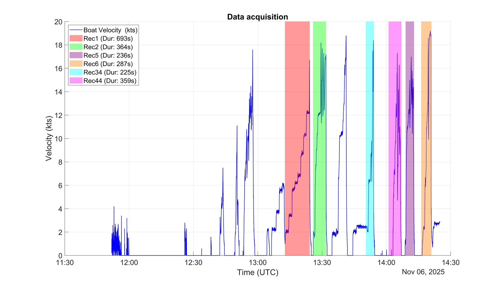
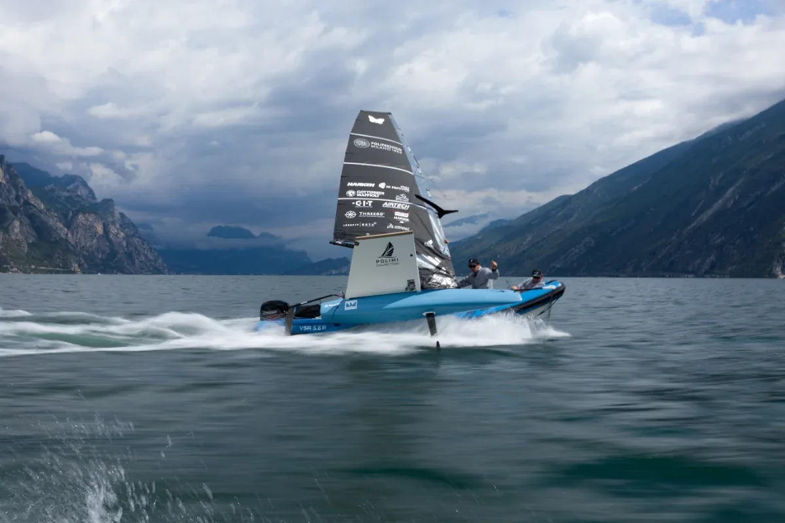
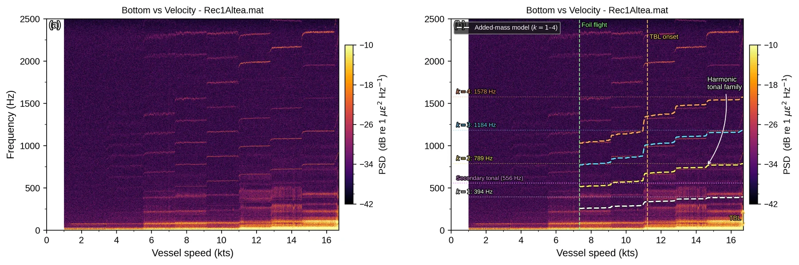
Mapped the foil’s vibratory behavior, revealing an added-mass frequency shift of the fundamental structural mode at low speeds. Diagnosed high-speed oscillations (>8–10 knots) not as simple vortex lock-in but as complex hydrodynamic phenomena, broadband Turbulent Boundary Layer excitation and a high-frequency harmonic tonal family. Bicoherence analysis demonstrated the tonal vibrations stem from a single non-linear structural process, establishing a clear engineering roadmap: increased structural stiffness, improved joint damping, flutter risk mitigation.
Hardware: Dewesoft SIRIUS & IOLITE, PCB triaxial accelerometers, PCB impact hammer, TML waterproof strain gauges, Vakaros GPS. Analysis: MATLAB, DewesoftX, STFT, bicoherence analysis, cubic spline detrending.
Design, manufacture, and structurally validate the crossbars of a sustainable Moth-class boat, replacing traditional carbon fiber with eco-friendly alternatives (basalt fiber and recycled PET). The challenge: characterize these novel materials, optimize the structure via FEA, and rigorously validate the numerical model with experimental strain-gauge data.
- Material characterization: conducted tensile tests (ASTM D3039, D3518) on basalt fiber to extract precise mechanical properties for the numerical models.
- FEM optimization: performed static FEA applying Tsai-Hill (fibers) and Galileo-Rankine (core) failure criteria to optimize the lamination sequence to a target safety factor.
- Mold-less manufacturing: hand-built the crossbars with a Vacuum Assisted Resin Transfer Moulding (VARTM) infusion process, without expensive molds.
- Experimental validation: designed and built a custom test rig, instrumented the beam with 8 strain gauges, and acquired static load data to validate the FEM predictions.
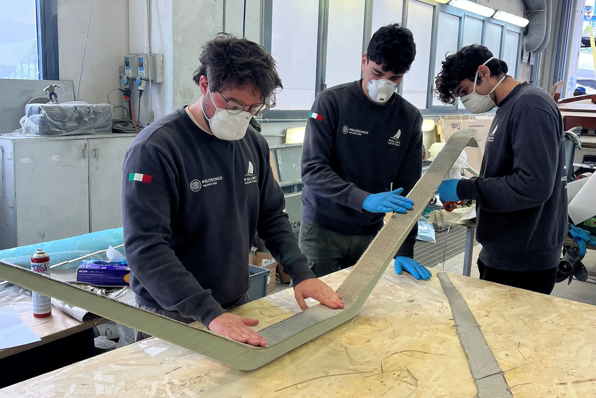
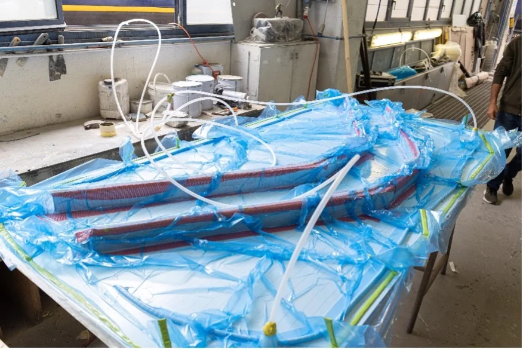
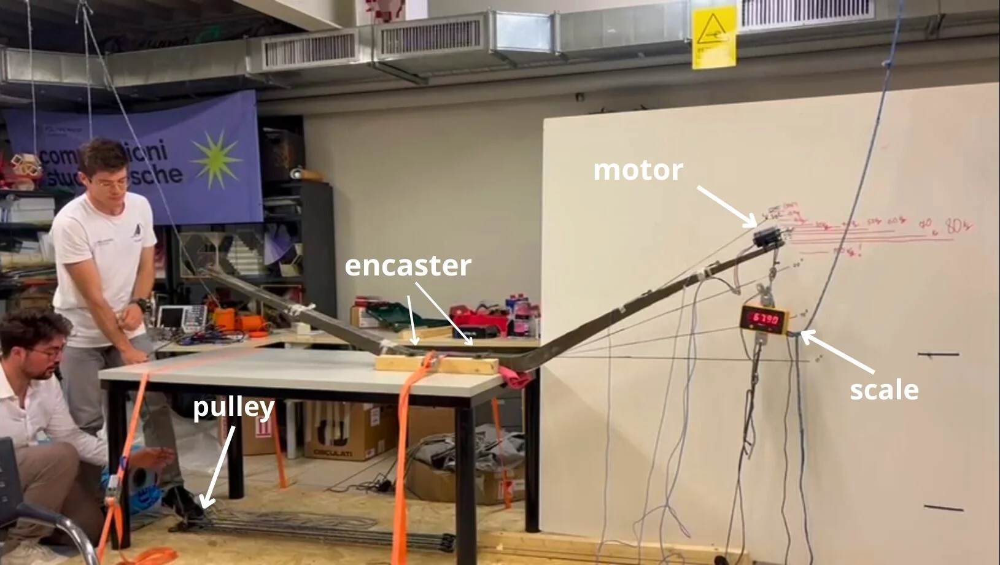
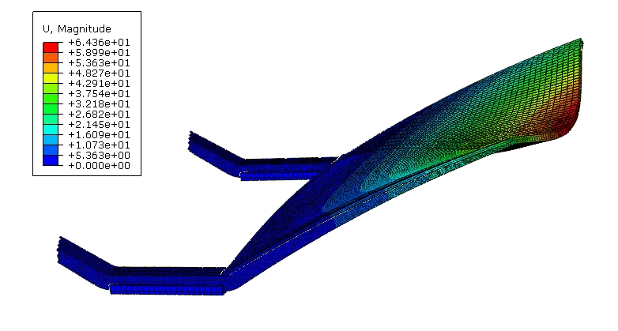
Successfully integrated numerical models with experimental data: test-rig validation showed strong correlation between strain-gauge measurements and FEM predictions (deviations mostly below 30%), validating the structural viability of the sustainable composite crossbar for racing conditions.
Hardware: DEWESoft Sirius X 8-ch DAQ, 3-wire 350 Ω strain gauges, custom test rig. Software/Materials: Abaqus (FEA), basalt fiber, Divinycell PR 200 (recycled PET), Elium thermoplastic resin.
Milan metro lines require continuous monitoring of rail-surface defects (worn joints, head shelling, rolling-contact fatigue cracks) to plan maintenance before they escalate. The existing workflow relied on raw axlebox-accelerometer recordings (8 channels) with no automated way to turn multi-day acquisitions into a structured, trackable defect history. The goal: an end-to-end MATLAB system, a filtering pipeline that reliably detects and localizes defects despite speed variation and noise, and an inspection app to browse, prioritize and export this data.
- Two-pass filtering & detection pipeline: dual bandpass architecture (temporal 2–350 Hz + spatial 0.05–1.0 m wavelength) with CFAR-style adaptive RMS thresholding to isolate localized rail defects from quasi-static and rolling noise, at 2 mm spatial resolution.
- Cross-run alignment: macro geometric alignment (cross-correlation on curvature) and sub-sample micro-alignment (Hilbert-envelope cross-correlation + FFT phase shift, ×5 upsampling), registering every run to a common reference with millimetric accuracy.
- Two-pass database construction: clustering + history-completion engine (MASTER_DB) fusing detected triggers with “silent” passes below threshold, keeping degradation trends populated over time.
- “Ultimate Inspector V10” GUI application: full MATLAB inspection app (package-based, global-variable-free architecture, 10 namespaces) with interactive filtering, per-defect signal inspection, automated PDF export, and a PCA + Autoencoder degradation-priority index (IPI).
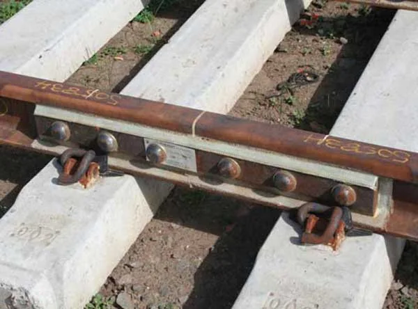
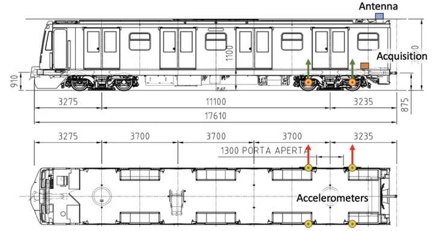
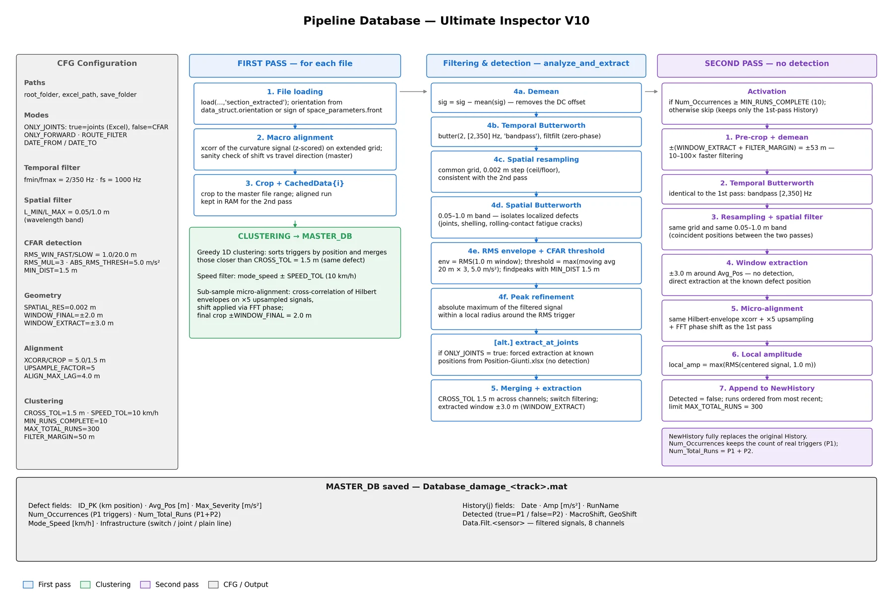
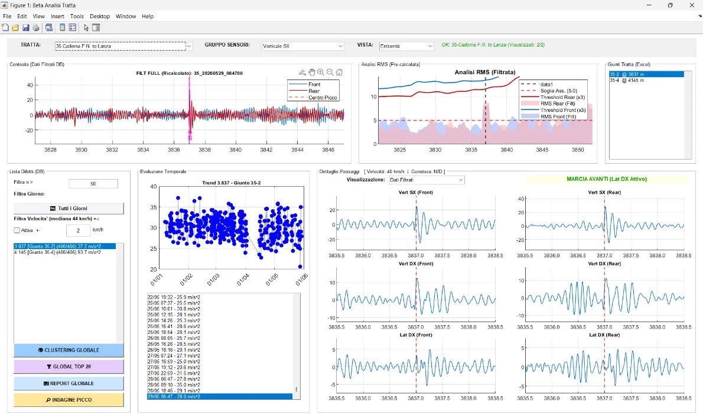
An automated pipeline that turns raw multi-day accelerometer runs into a georeferenced defect database at 2 mm resolution, packaged into the Inspector, a modular GUI used to visualize defect history, export PDF reports, and rank maintenance priorities via the IPI index for the ATM Milan metro network.
Hardware: axlebox triaxial accelerometers (8 ch), on-board DAQ, GPS/odometry. Analysis: MATLAB, Butterworth filtering, Hilbert transform, FFT sub-sample registration, PCA & Autoencoder anomaly scoring.
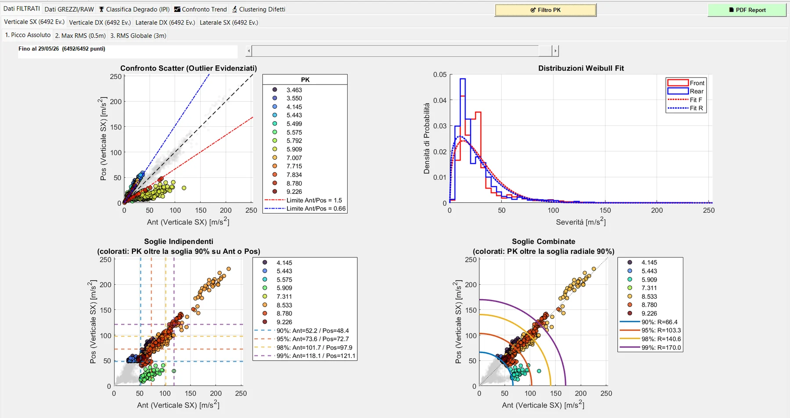
The inspection app is built as a package-based, global-variable-free MATLAB architecture (10 namespaces) with interactive filtering, per-defect signal inspection and automated PDF reporting. A PCA + Autoencoder degradation-priority index (IPI) ranks every defect, turning thousands of raw events into an ordered maintenance queue.
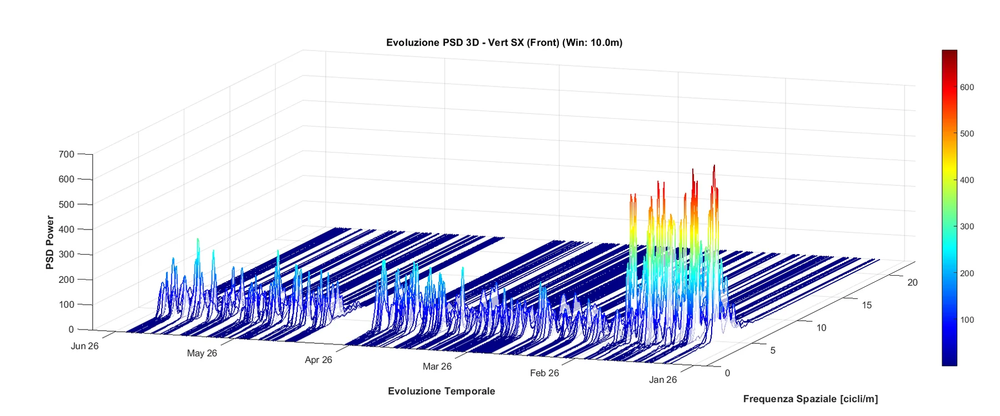
The two-pass database engine fuses detected triggers with “silent” passes below threshold, so every defect keeps a fully populated amplitude history even when it is not firing, the foundation for degradation trends spanning months of acquisitions. Millimetric cross-run registration (Hilbert-envelope cross-correlation, ×5 upsampling, FFT phase shift) guarantees that each pass is compared at exactly the same track position.
Hardware: axlebox-mounted triaxial accelerometers (8 channels), on-board DAQ, GPS/odometry. Software: MATLAB (Signal Processing, Statistics & ML, Deep Learning), Butterworth filtering, Hilbert transform, PCA & Autoencoder anomaly scoring.
The Dewesoft Summer Camp is a selective international program held annually at Dewesoft headquarters in Slovenia, where engineering students work on real measurement projects with professional DAQ hardware and software. Admission is earned through a technical paper, a case study or application note built on original measurements taken with Dewesoft instrumentation, reviewed by the company’s engineering and editorial teams. Places are limited per country.
- Admitted on the hydrofoil vibration study: the dual-phase diagnostic campaign on the ALTEA prototype, laboratory modal analysis correlated with on-water strain and acceleration measurements, was submitted as the entry case study and accepted for the 2026 edition.
- Instrumentation groundwork: completed the required online PRO training track on data acquisition, signal measurement and digital signal processing before the event.
- One week of applied measurement: three days of DAQ technology training followed by five days of team engineering, business and marketing challenges on industrial-grade hardware.
- Interdisciplinary teamwork: collaboration in small mixed teams with students and young engineers from across Europe, mentored by Dewesoft application engineers.
- Published authorship: selected papers are credited to their student authors and published on Dewesoft’s technical channels.
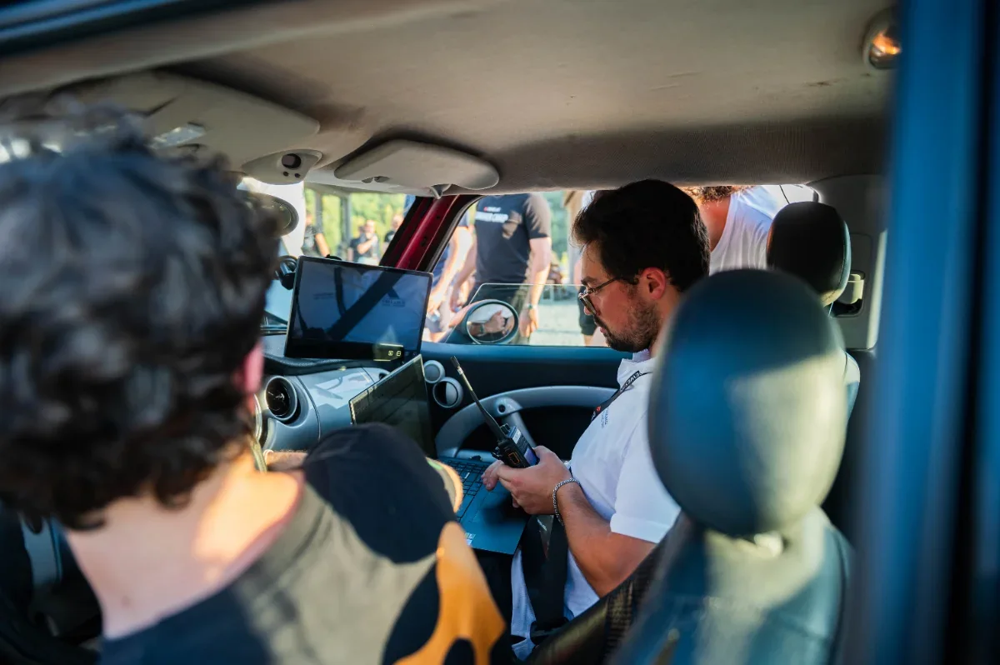
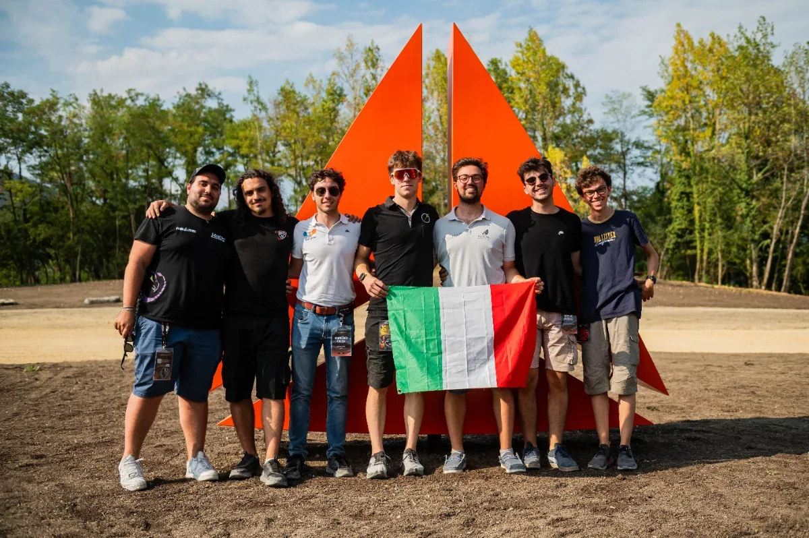
External validation of the hydrofoil work by the instrumentation manufacturer itself, and a week of measurement practice outside the sailing domain, sensor selection, channel setup, synchronization and live analysis under time pressure, in English, with a team assembled from scratch.
Hardware: Dewesoft SIRIUS & IOLITE DAQ, accelerometers, strain gauges, thermocouples. Software: DewesoftX. Format: 3 days DAQ training + 5 days of engineering, business and marketing challenges.
Single-anchor Ultra-Wideband (UWB) indoor localization suffers from signal degradation: phase-difference Angle of Arrival (PDoA) calculations are highly sensitive to device orientation and ambient noise, making localization unstable. The goal was an embedded ML model (TinyML) correcting angle estimation in real time by fusing raw PDoA data with inertial (IMU) data directly on the edge device.
- Data engineering: designed a multi-phase acquisition strategy (Radial, Random Walk, Inertial Stress Test) to capture signal dynamics; developed custom Python middleware to synchronize asynchronous UWB and ground-truth (RTLS) data streams.
- Custom NN & optimization: replaced black-box auto-generated code with a fully custom TensorFlow/Keras training pipeline preventing data leakage; ran Bayesian hyperparameter optimization on Weights & Biases.
- Embedded deployment (C++): deployed the inference engine on an Arduino Nano 33 BLE, writing custom firmware for live serial parsing, manual data standardization, and TFLite-Micro integration.
- Resource pruning: implemented hybrid INT8 post-training quantization and library pruning to fit the model within the microcontroller’s memory limits.
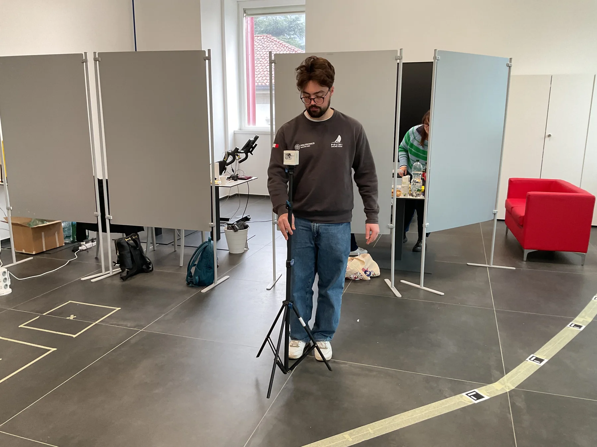
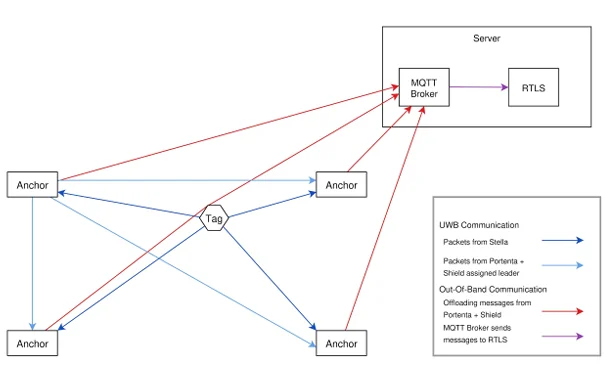
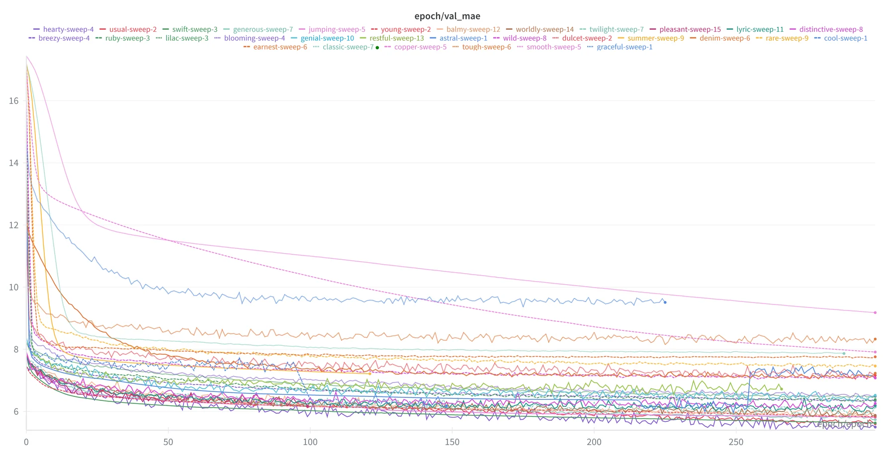
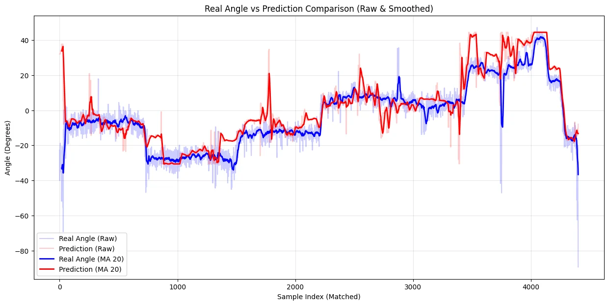
Deployed a robust TinyML model with a 2 ms inference time. Optimization and hybrid quantization cut the Flash footprint by 44.2% (to 155.8 KB) with negligible accuracy loss, Mean Absolute Error of 5.03°, proving highly accurate, orientation-agnostic tracking is feasible on low-cost edge microcontrollers.
Hardware: Arduino Nano 33 BLE, UWB mobile tag & anchor. Software: Python, C++, TensorFlow/Keras, TensorFlow Lite for Microcontrollers, Weights & Biases.
Optimize two distinct manufacturing operations: minimize peak force (Fmax) in a high-temperature forging process, and reduce total energy consumption of a 3-stage sheet-metal deep-drawing process (Bimby bowl). The core challenge: balancing mechanical and energetic efficiency with strict quality constraints, complete die closure in forging, no fractures or critical wrinkling in deep drawing.
- Forging FEM & statistical metamodeling: executed an adaptive Design of Experiments strategy on a Forge Transvalor simulation; developed Least-Squares and Gaussian predictive metamodels in JMP correlating press speed and billet temperature to peak force.
- Desirability optimization: used prediction profilers to pinpoint the optimal configuration (V = 180 mm/s, T = 1000 °C) minimizing Fmax with uncompromised component quality.
- Iterative deep-drawing simulation: conducted a rigorous 3-stage simulation in Altair Inspire with advanced SS400 material models (Hill ’48 anisotropy, power hardening), evaluating Forming Limit Diagrams to predict and prevent failure.
- Data integration & energy calculation: engineered MATLAB scripts to numerically integrate force-displacement data from the FEM results, quantifying the impact of geometric die modifications (e.g. corner radii tuning).
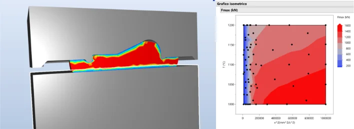
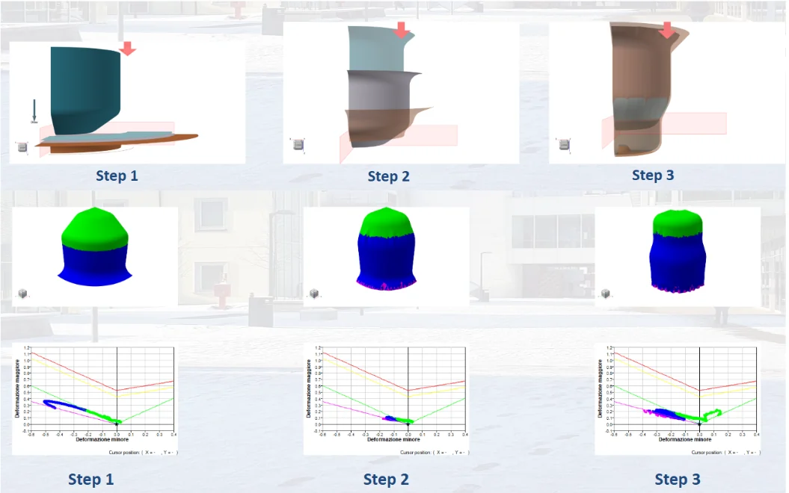
Defined a highly robust, low-force processing window for the forging operation via the Gaussian metamodel, while the iterative FEM optimization loop reduced deep-drawing energy consumption to 19.31 kJ per quarter-bowl, a reliable, fracture-free process sequence combining structural simulation with statistical analysis.
Software: Forge Transvalor, Altair Inspire, JMP, MATLAB. Methods: Gaussian & Least-Squares metamodeling, Forming Limit Diagrams, desirability profiling.
Sailing has a high technical barrier to entry. The objective: an immersive VR sailing simulator for the Meta Quest 3, targeting students and beginners. The main challenge was balancing physical realism with the computational constraints of a standalone headset, while actively mitigating simulator-induced motion sickness, a notoriously high risk in maritime VR.
- Polar-diagram physics model: bypassed heavy fluid dynamics with a custom C# physics engine based on real-world yacht polar diagrams, mapping true wind angle directly to hull target speed.
- Intuitive VR interactions: developed a physical “grab-and-rotate” virtual helm with 1:1 spatial mapping of wrist movements to the vessel’s yaw response.
- Procedural sail automation: engineered intelligent scripts (AutoBoma, AutoFiocco) that dynamically trim mainsail and jib based on Apparent Wind Angle and tack detection.
- Progressive UX & sickness mitigation: structured learning from a static introductory room to open-world free roam and a timed regatta; excluded vertical oscillatory motion to reduce visual-vestibular conflicts.
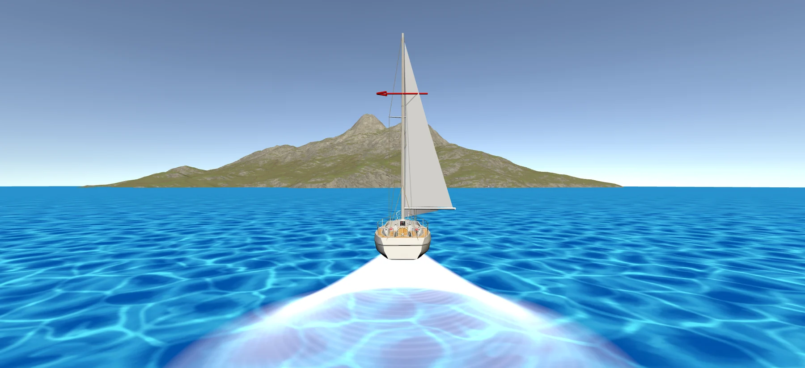
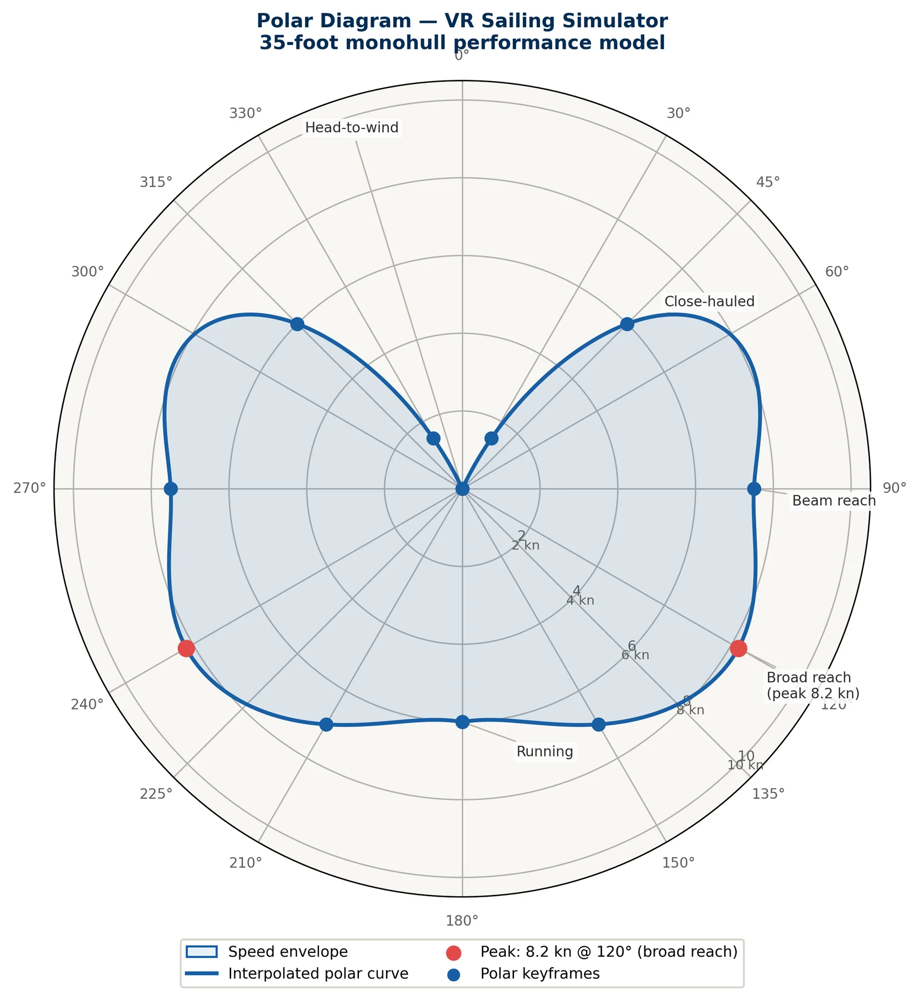
Deployed a fully standalone VR experience. Structured user evaluations scored 76.36/100 on the SUS, while SSQ results confirmed the deliberate physics simplifications kept nausea and disorientation exceptionally low, validating the simulator’s accessibility for non-sailors and VR beginners alike.
Engine: Unity 6, C#. Hardware: Meta Quest 3, standalone Android APK. Validation: System Usability Scale (SUS), Simulator Sickness Questionnaire (SSQ).